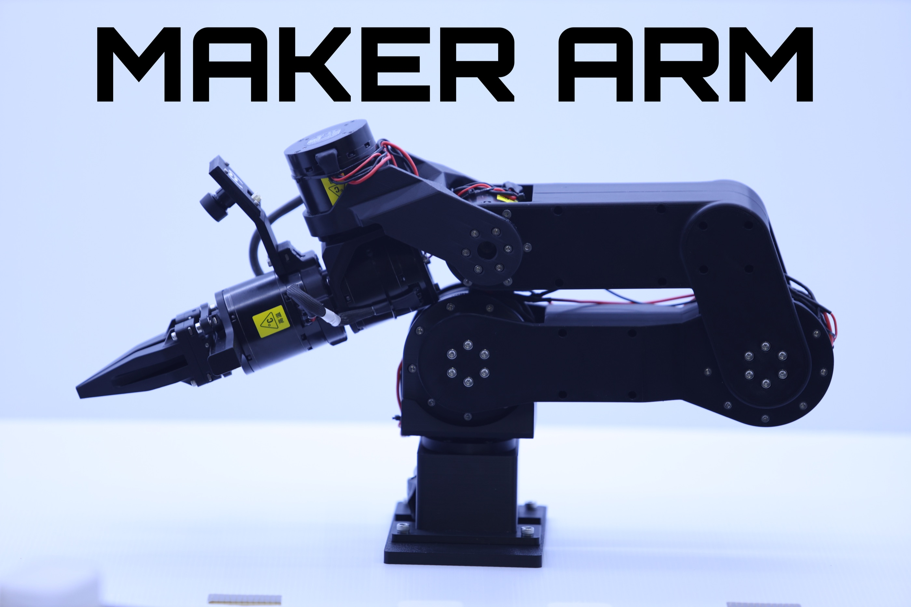
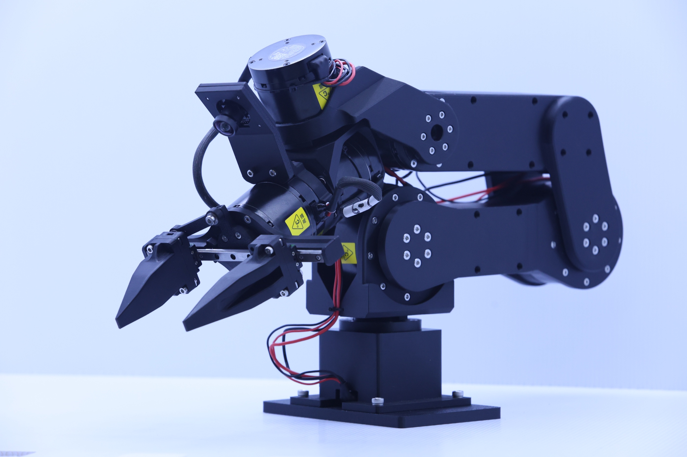
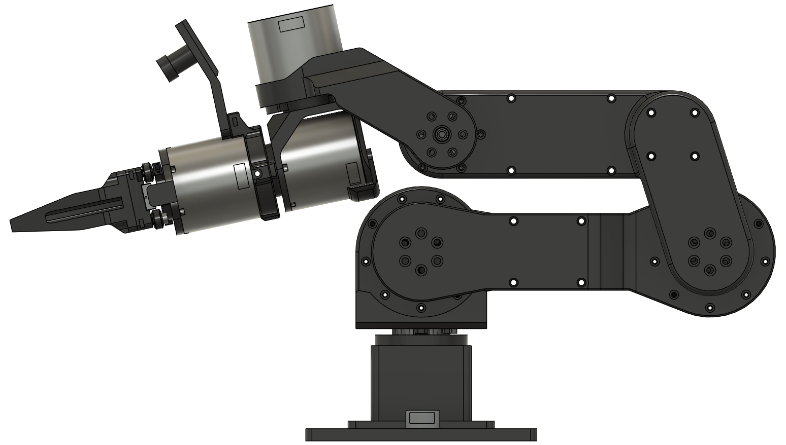
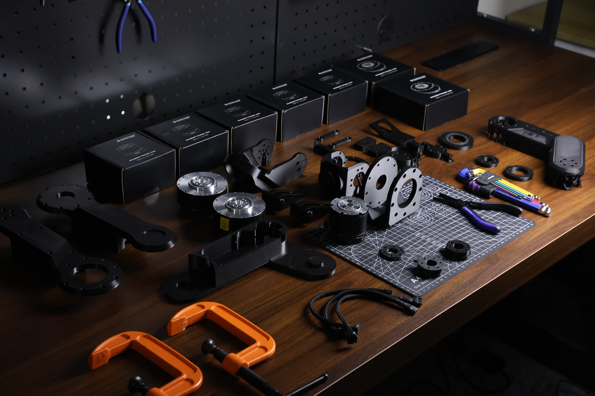

1.5 kg payload.
RobStride 02 actuators drive the shoulder pitch and elbow, where the load sits. Compact RobStride 00s handle the remaining joints and gripper.

The frame is printed so you can reprint and revise it. The actuators and control bus are picked for real Physical AI development, with hardware safety built in.

RobStride 02 actuators drive the shoulder pitch and elbow, where the load sits. Compact RobStride 00s handle the remaining joints and gripper.
3D-printed structural parts make the arm easy to modify. You can reprint or revise parts as your project changes.
CAN communication keeps wiring and control direct across the full 6+1 DoF chain.
The whole structure is yours to print, revise, and reprint. Files, build guide, and kinematics are all published.
Follow MakerMods on GitHub →
MK.A / FULL ASSEMBLY CADThe SDK lands first so you can drive the arm. LeRobot follows, so you can teach it.
git clone https://github.com/makermods-robotics/maker-arm-sdk && cd maker-arm-sdk
python3 -m venv .venv && source .venv/bin/activate
python -m pip install -e ".[dev]" && maker-arm doctorFirst
Drive the arm from Python. Read joint state, send position and torque targets across the CAN chain, work the gripper, and script a full routine in a few lines.
Then
The path into Physical AI. Teleoperate the arm, record demonstration datasets, train a policy on them, and evaluate it back on the hardware.
$9993D-printed · ships October · + $129 shipping

Every 3D-printed part, bearing, screw, actuator and cable, packed flat. You assemble the whole arm from scratch, and you know every joint by the time it first moves.
$1,199bench-tested · ships October · + $129 shipping

The arm arrives built, wired, and bench-tested. Open the box, set it on your bench, plug in power, and start working the same afternoon.
Printed Maker Arm · fully assembled